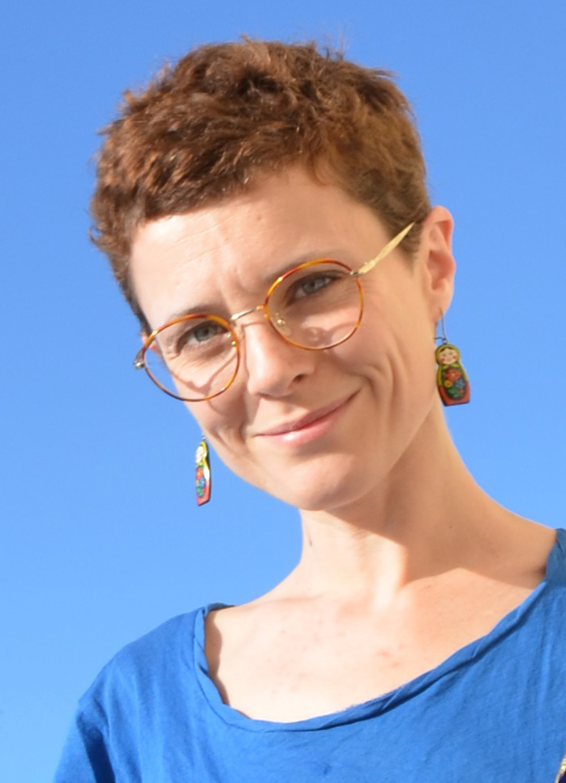

Convaincues que chacun d’entre nous peut contribuer à l’avenir de notre planète, nous avons élaboré un projet encourageant l’économie circulaire, sociale et solidaire.
Mamans de jeunes enfants, nous avons pris conscience que le renouvellement constant de leur garde robe est source de gaspillage vestimentaire.
Passionnées de textile, de couture et de récup, nous mettons nos savoir-faire au service du projet Troc&Mode kids.
Chacune avec sa sensibilité et son expérience, nous amenons notre contribution à ce projet .
|  | |
Marie-Aude |
Pauline |
|
Issue du monde du commerce et du prêt à porter, Marie-Aude a pu mesurer la pollution et le gaspillage vestimentaire induits par la surproduction de vêtements. Elle a donc choisi de mettre son expertise au profit d’un projet éthique, valorisant l’économie locale et circulaire et luttant contre la surconsommation vestimentaire. |
Créatrice textile travaillant uniquement à partir de matériaux de récupération, Pauline a décidé de mettre ses compétences au profit du projet Troc & Mode Kids pour partager son goût pour le recyclage et la création et faciliter l’échange de bonnes pratiques ! |
|
|
Nous actuellement une association, incubée par ALTERINCUB, incubateur d'innovation sociale dans l'ESS (Economie Sociale et solidaire). Notre objectif est de démarrer en Septembre 2019.
Notre objectif est de créer des emplois locaux, dans le cadre d'une entreprise coopérative, de l'ESS (Economie sociale et solidaire).
Nos valeurs sont :